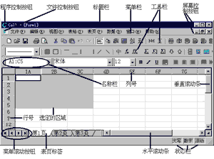
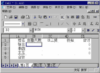
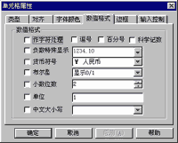
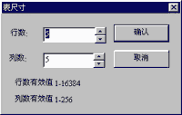
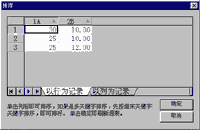
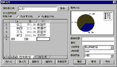

|
|
| 当前位置：电脑报电子版 > 1999 年 > 25 期 > 软件世界 > 一步一步学CELL表 |
| 《 一步一步学CELL表 》 |
| 提起电子表格软件，相信广大用户的第一概念就是微软的Excel。不错，Excel的确是一个非常优秀的电子表格软件，它的功能也是有目共睹的。不过，它毕竟是外国人编的，很多方面都不符合中国人的应用需求（如它的无限表格方式就令许多国人大为不解）。而CELL表(最新版已改称为《华表32》)作为一个国人自行研究、开发的电子表格软件，它有着与Excel几乎同样丰富的功能（如常规的制表、数据计算、数据汇总、对象插入、绘制图表等），并且CELL表还在表格斜线处理、可视化操作、数据查询等方面有着自己独特的创意，更为重要的是比较符合国人的操作习惯，价格也十分低廉（普通版作为共享软件发布，注册费仅29元），实为电子表格软件上品！现在就让我们一起来用一用CELL表吧。 一、基本概念 1.单元格 单元格就是我们在电子表格软件中看到的由相互交叉的行列线所组成的方格，它是电子表格最基本的组成单位。在对单元格的命名及引用过程中，我们一般都遵循列号用大写英文字母加行号阿拉伯数字的命名原则，即表格中的第1列（即所谓的A列）第1行的单元格通常称为A1，第3列（即C列）第5行的单元格通常称为C5。 2.表页 表页，在Excel中称之为工作表。排列成行和列的单元格组合在一起就构成了一个表页。一个CELL表页可以包括16384＊256个单元格。表页是存储和处理表格数据的主要形式，我们在电子表软件中所进行的任何操作都是以表页为基础的。表页的名称一般都显示在窗口左下角的表页标签栏中，我们只需单击某个标签即可快速对表页进行切换。 3.工作簿 多张表页组合在一起就形成了工作簿（CELL工作簿缺省包含1张表页、Excel工作簿缺省包含5张工作表页），它实际上就是我们保存在磁盘上的电子表格文件。用户可以在同一个工作簿的不同表页分别处理不同内容，然后集中进行有关汇总、计算等操作。如我们可在一个工作簿中设置13张表页，前12张表页分别存放每个月的数据，最后一张表页存放全年汇总数据。这就有助于我们对某些复杂统计数据进行处理。 4.选定单元格 在电子表格软件中，选定单元格是我们经常需要从事的操作之一，这主要是为了将某些单元格定义为一个整体，以便于某些特殊操作（如计算、排序等）。我们若要选定许多单元格（即通常所说的将它们定义为块），则应将鼠标移至需定义区域的起始位置，按下鼠标左键不放，将相应单元格全部拖黑之后再释放鼠标即可（图1中灰色的单元格即为我们选定的单元格）。 二、CELL的下载、安装及启动 CELL表目前只有通用版，该版本软件作为共享软件发布在INTERNET网络上，由于下载的CELL表中还包含了许多数据库开发工具，因此也称为CELL组件。可以从http://www.flink.cn.net/trustsoft/download.htm下载该软件，最新版本为320。《电脑报配套光盘春节特刊》也收录了CELL 315的完全安装版。注意，在使用CELL表时，必须要安装ODBC数据库驱动程序，因此下载时注意要下载完全安装版本。CELL表的专业版本将在7月发布，名称将改为《华表》。CELL的安装向导非常友好，我们只需一路确认下去即可完成安装操作，这里就不作过多介绍了。安装完成后，CELL将会在Win98的开始菜单上创建一个“CELL组件”程序组，执行该程序组中的“CELL表”命令，即可启动CELL（操作界面如图1所示）。 CELL表的界面与Excel很相似，其实它不仅界面与Excel相似，而且操作上也与Excel有着诸多类似之处，相信接触过Excel用户都会从这里找到熟悉的“感觉”。 三、基本操作 1.创建CELL表格 CELL提供了200多种不同的电子表格模板，如公用表、人事用表、财务用表、管理用表、秘书用表等，我们只需执行“文件”菜单的“新建”命令，打开“模板”对话框（如图2所示），然后选择适当的模板分类及相关模板并单击“确定”按钮即可按照该模板创建出所需类型的电子表格，然后即可直接加以使用了。  2.数据录入及格式设置 (1)数据录入。在电子表格中输入常规数据是非常方便的，我们只需将光标移至某个单元格并输入所需数据即可，输入完毕后按TAB键可右移一个单元格、按方向键↓可下移一个单元格继续进行输入。如某用户准备利用CELL处理一份简单的工资表（如图3所示），我们只需将光标移至A1单元格中输入“姓名”，然后按TAB键将光标移至B1单元格中输入“出勤天数”……重复上述步骤直至输入所有内容即可。 (2)格式设置。不同类型的数据（如数字、文本、日期、货币等），在电子表格软件中的处理方式是不一样的，这就要求我们采用适当的方法对这些数据的类型进行设置。如上述工资表中的“姓名”列一般为文字内容，与系统默认的文本格式相符，因此无需用户额外设置；“出勤天数”列一般为数据格式，且不保留小数，为此，我们选中该列并执行“表格”菜单的“单元格”命令，打开“单元格属性”对话框，然后单击“数据格式”选项卡（如图4所示），最后取消系统原有的“小数位数”选项；工资表中的“日工资”、“补贴”和“合计”列一般都是数据格式，且保留2位小数，此时我们就应复选“数据格式”选项卡中的“小数位数”选项，并在其后的对话框中选择保留“2位”小数。 (3)字体修饰。选定欲修饰的单元格后执行“表格”菜单的“单元格”命令，打开“单元格属性”对话框，然后我们就可以利用“对齐”选项卡设置单元格中数据的对齐方式；利用“字体颜色”选项卡设置数据的字体、字号、颜色、前景、背景等内容了。 3.调整工作表大小 默认情况下，CELL表页的大小为50行10列，广大用户若拟对其进行修改（如上述工资表实际只需要5行5列，我们现拟将其余部分删除），则应执行“表格”菜单的“表尺寸”命令，打开“表尺寸”对话框（如图5所示），然后分别在“行数”和“列数”栏中输入所需的行列数并单击“确定”按钮即可。 4.公式计算 很显然，上述工资表中每个职工的工资应发数等于出勤天数乘以日工资再加上适当补贴，这些计算工作即可利用CELL来帮助我们完成。为此，我们可将光标移至E2单元格中，然后执行“数据”菜单的“输入公式”命令，打开“表达式计算”对话框（如图6所示），然后在计算公式对话框中输入所需的计算公式“B2＊C2＋D2”，单击“计算”按钮后，CELL即会将有关计算结果显示出来，我们只需加以确定即可将它们插入到CELL表页中，从而简化了用户的计算工作。需要说明的是，CELL在提供普通计算功能的同时还提供了包括三角函数、绝对值函数、对数函数、统计函数、表函数等函数在内的上百种计算函数，广大用户可根据需要直接在“表达式计算”对话框加以选用。 注意，当我们在CELL的某个单元格中定义了计算公式之后，该单元格就不能直接进行拷贝、删除等操作了，用户若拟对其进行修改只有使用鼠标双击该单元格，打开“表达式计算”对话框之后才能进行。 5.自动填充功能 经常使用Excel的用户都知道，Excel具有一项非常实用的数据填充功能，也就是说当用户在单元格中输入某个数据或某个公式之后，对于其他类似的数据和公式就无需再重复输入，直接利用数据填充功能即可达到快速输入的目的。这在CELL中也是可行的，只不过CELL将自动填充功能分成了两部分，即主要用于填充数据的“填充单元内容”和主要用于填充公式的“填充公式序列”。 用户若拟利用CELL的数据填充功能，则首先应在有关单元格中输入原始的填充内容，然后将所有欲填充的单元格（包括原始单元格）定义为块，最后执行“编辑”菜单“填充单元内容”子菜单中的适当命令（如向下填充、向上填充、重复填充、等差填充、等比填充、序列填充命令等），CELL即会按照用户的要求对选定单元格的数据进行填充。 相对于数据填充功能而言，公式填充功能的作用要更大一些。为此，我们可先将E2:E4单元格定义为块（必须包含已经定义了公式的E2单元格），然后执行“编辑”菜单的“填充公式序列”命令，CELL即会参照E2单元格的公式自动为E3、E4等单元格设置公式（执行自动填充功能后，CELL会将E3的计算公式定义为B3＊C3＋D3、将E4的计算公式定义为B4＊C4＋D4），并将计算结果显示出来，从而满足了广大用户的需要。 6.数据汇总 对于表页的纵向合计数，我们一般可通过汇总功能来实现，而无须去定义什么公式（这样可加快操作速度）。如我们需要求出上述工资表中“出勤天数”的合计数，只需将B2:B5单元格定义为块后单击快捷工具栏上的“纵向求和”按钮，CELL即会将B2:B4单元格中的数据相加后保存到B5单元格中。当然，其他几个栏目纵向合计数的计算方法也完全一样，使用非常方便。另外，除纵向汇总之外，CELL还提供了横向汇总功能，单击快捷工具栏上的“横向求和”按钮即可。 7.数据排序 假设用户需要按照工资表中的某个项目对全体人员进行排序（假设以出勤天数为准排序，若出勤天数相同则以日工资为序），则我们首先应将所有职工的出勤天数及日工资定义为块（B2:C4），然后执行“数据”菜单的“区域排序”命令，打开“排序”对话框并选择“以行为纪录”选项卡（如图7所示）。首先单击2B按钮，选择次要排序顺序（正三角形表示从小到大，倒三角形表示从大到小），然后单击1A按钮，选择首要排序顺序（在CELL排序功能中，先选择的项目后起作用，后选择的项目先起作用）。选择完适当的排序方式后单击“确定”按钮，CELL表页中的行顺序就会按照用户选择的条件发生变化。 8.数据重算 一般来说，当用户对参与计算的单元格中的原始数据进行修改之后，CELL会自动更新有关公式的计算结果而无须用户操心，不过当用户执行了某些特殊操作（如数据排序）之后，CELL可能不会自动更新，这时就需要我们手工对计算公式的结果进行更新。为此，我们只需执行“数据”菜单“公式重算”子菜单中的相应命令即可（“重算本页”命令表示进行重新计算当前表页中的计算公式，而“重算本表”则表示重新计算当前工作簿中的所有计算公式）。 9.表格线及斜线的绘制 与Excel一样，CELL缺省状态下给出的网格虚线只是用来显示网格的，它在实际打印工作时并不会打印出来，用户若拟打印具有表格线的表格，则必须手工绘制可以打印出来的实心表格线——首先选定需要绘制表格线的单元格，然后执行“表格”菜单的“画线/抹线”命令，打开“画线区域”对话框，再从中选择适当的表格项类型（包括正反两种斜线）及样式、颜色，最后单击“确定”按钮即可达到目的。另外，我们也可利用格式工具条上的“网格”、“上线”、“下线”、“左斜线”和“右斜线”等命令按钮快速绘制表格线。 四、高级技巧 1.将自己所创建的表格转换为模板 使用模板功能可加快日常操作速度，因此不少用户都希望自行创建所需的模板，这在CELL中是很容易办到的。CELL对电子表格文档及模板没有作严格区分，也就是说它的电子表格文档与模板可相互通用，用户只需将自己所创建的CELL表格拷贝到CELL安装盘所在的“trustsoft\cellctrl\ocx\exe\template”文件夹的相关子文件夹中即可实现将其转换为模板的目的。 2.调整（缺省）工作表大小 从前面的介绍中可以得知，CELL提供的电子表格默认包含50＊10个单元格，这显然无法满足用户的不同需要，我们可以对它加以修改（如改为30＊10等）。对此，我们可执行“编辑”菜单的“选项”命令，打开“选项”对话框，然后利用“空表页缺省行数”和“空表页缺省列数”对表格的缺省大小进行修改。另外，我们还可以利用“选项”对话框对CELL的启动目录进行调整。 3.输入限制 为防止输入错误，我们经常需要为某个单元格的取值范围作出适当的限制（如不准在某个单元格中输入汉字、不准在某个单元格中输入大于1000的数值等），为此，我们可执行“表格”菜单的“单元格”命令，打开“单元格属性”对话框并选择“输入控制”选项卡，然后再从中选择适当的控制类型，如全数字、全字母、日期格式、时间格式、介于最小值与最大值之间的某个数字等。我们甚至还可以利用“只读”选项将某个单元格设置为只读属性，以防止用户对它的误修改。 4.与其它软件的数据交换 实现数据共享是我们在使用任何一款软件时的基本要求，CELL在这方面做得非常好，它可直接读取Access、CCED、dBASE、Paradox、FoxPro、Lotus、TXT、Excel、ODBC、WPS等众多程序的数据，这就极大的扩大了CELL的使用范围。需要说明的是，CELL在读取不同数据时分别采用了不同的读取方法，因此我们应分别执行不同命令打开不同类型的数据文件——打开CCED、TXT文件时应执行“文件”菜单“读入文件”子菜单中的“读入CCED和文本文件”命令；打开Excel文件时则应执行“文件”菜单“读入文件”子菜单中的“读入Excel文件”命令；对于其他类型的数据，我们在读取时可使用“文件”菜单的“从数据库读取”命令。 5.创建统计图表 日常工作中，我们经常需要将数据转化为直观的图形，即统计图表来说明问题，这对CELL来说也是非常容易的。CELL提供了一个强大的统计图表功能，它可采用多种不同方式将用户数据转换为图表方式反映出来。现以采用饼图方式分析上述工资表中每个职工的工资占总工资的比例为例，将创建统计图表的步骤简要介绍如下： (1)将光标移至准备存放统计图表的单元格中（注意，CELL在处理统计图表的方式上采用了一种与Excel完全不同的方法，Excel是将统计图表作为一个对象放在单元格上面的，而CELL则是将统计图表作为一种单元格类型放到某个单元格中的）。 (2)执行“数据”菜单的“图表向导”命令，打开“图表向导”对话框（如图8所示）。 (3)在“源数据区域”栏中输入“A2:E5”，然后单击“取数”按钮，将电子表格中的数据添加到“图表向导”中来。 (4)在“数轴方向”中选择“列”选项，然后利用“删除列”按钮将出勤天数、日工资、补贴等无用数据删除。 (5)在“图表向导”对话框的数据框中将“姓名”列设置为“X轴”、将“应发工资”列设置为“Y轴”，然后将“合计”行设置为说明行、将张三、李四、王五等人的工资行设置为数据行。 (6)在“图表类型”列表框中选择“饼图”选项。 (7)对名称、脚注等其他项目进行适当设置。 (8)单击“刷新图表”按钮，我们所需的统计图表即会出现在“图表示范”框中，广大用户可据以对图表作进一步修改。 (9)单击“确定”按钮，系统即会按照用户的要求创建出相应的统计图表，并将其插入到选定的单元格中，从而满足了用户的要求。 怎么样，看了上面的介绍，你是不是也对CELL产生了兴趣，那就赶快试试吧！ (特约撰稿人 胡锦承) |
| 下载本期推荐软件 | 页 首 |
| 《电脑报》版权所有，电脑报网站编辑部设计制作发布 |